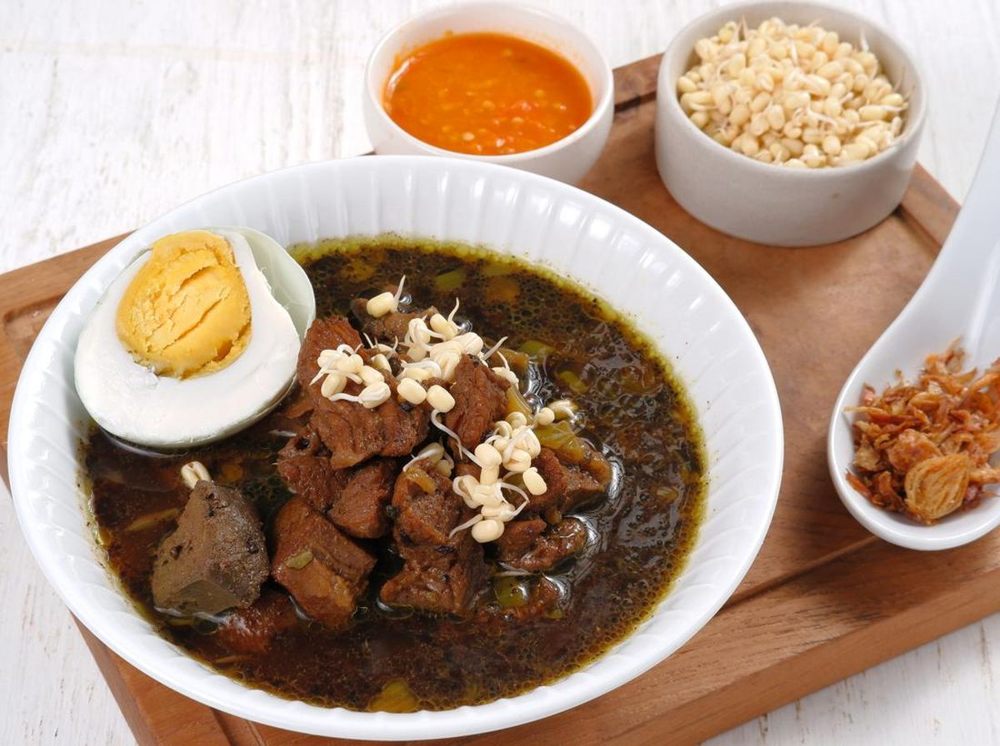
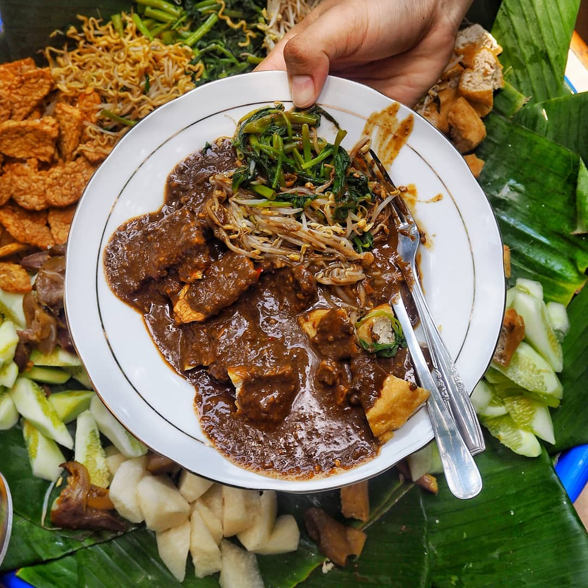
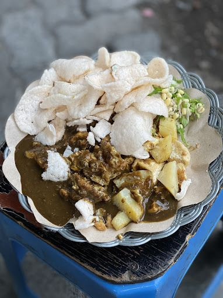
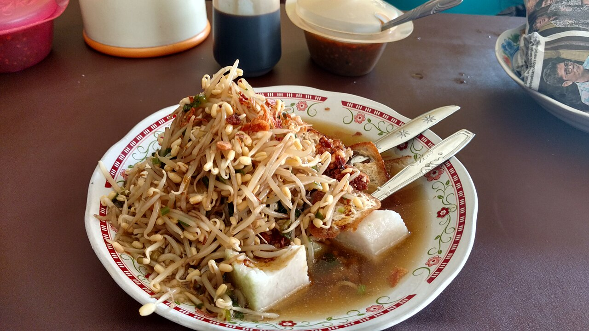
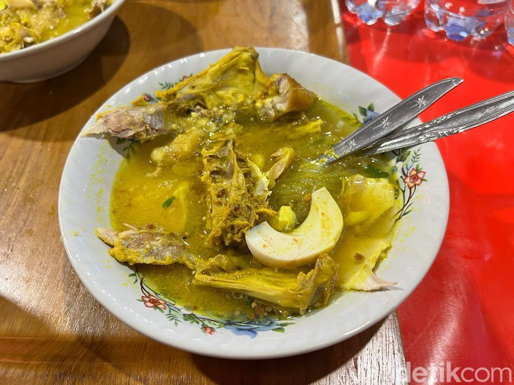

Legendary culinary heritage of East Java with distinctive Nusantara spices.

A legendary beef soup featuring a rich, dark black broth derived from authentic kluwek (black nut). Served warm with fresh bean sprouts, salted egg, and spicy shrimp paste sambal, creating a uniquely savory and deeply spiced flavor that delights the palate.

A refreshing dish that combines various fresh vegetables, young fruits, rice cake (lontong), and chewy cingur (cow snout). All ingredients are tossed in a thick, sweet, savory, and slightly spicy shrimp paste (petis) dressing, making it a highly refreshing snack or lunch.

A legendary street food consisting of fried tofu, lontong, and bean sprouts, crushed together directly on the plate. Smothered in a thick, savory peanut and shrimp paste sauce, and topped with shrimp crackers and fried shallots, it delivers a highly satisfying texture and flavor in every bite.
A unique variation of beef satay where each skewer is coated with young grated coconut before being grilled over charcoal. The combination of tender meat, savory coconut aroma, and sweet soy sauce makes it an iconic Surabaya culinary must-try.

A favorite local breakfast featuring rice cake (lontong) with fresh bean sprouts, lentho (mung bean fritters), fried tofu, and a pour of rich, savory bone broth. Completed with sweet soy sauce and chili, this dish offers warmth and rich flavors right from the morning.

A classic Surabaya chicken soto with a clear, fragrant, and spice-rich broth, served with shredded chicken, bean sprouts, and a sprinkle of koya (a powder made from ground shrimp crackers and garlic). Squeezed with lime and chili, it offers a warm, savory, and deeply comforting taste.